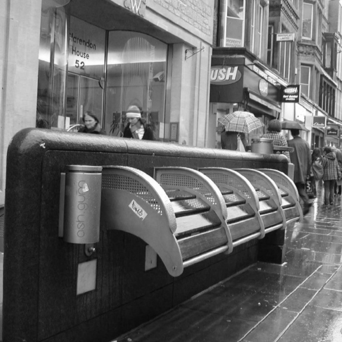

EL DESESPERANZADOR
Edicion IX - 07 de febrero de 2024
ANTIFAS A PRISIÓN
EL SUPREMO CONDENA A PRISIÓN
El Supremo condena a cuatro años y nueve meses de prisión a cuatro de los seis antifascistas de Zaragoza. El alto tribunal rebaja la pena impuesta por la Audiencia y después por el TSJA. Sin embargo, condena a los jóvenes que se manifestaron contra un acto del ultraderechista Vox en enero de 2019, a una pena total de cuatro años y nueve meses de prisión por "delitos agravados de desórdenes públicos y atentado" y "lesiones". La campaña por la absolución sigue defendiendo que "son inocentes" y recuerda que solo hay una única prueba: "la opinión policial". En las redes se ha activado una nueva ola de solidaridad.
Las familias, junto a la Coordinadora Antifascista de Zaragoza, han mantenido abierta una campaña durante todo este tiempo para dar a conocer el caso y exigir la absolución de los seis jóvenes.
PROHIBIR A LOS SINTECHOS
Legisladores californianos de ambos bandos quieren prohibir el sinhogarismo. Una vez más en este triste mundo, se prefiere prohibir que la gente viva en la calle y promover la arquitectura urbana en contra de ellos en vez de proporcionar hogar a estos.
DOS TITULARES QUE QUEDAN MUY BIEN JUNTOS
"Ayuso pide para Galicia y para España el glorioso cambio en Argentina de Milei” y “El gobierno de Milei cerró el organismo que brinda medicamentos a niños con cáncer” “Isabel Díaz Ayuso: La mejor sanidad de España está en Madrid, a pesar de los bulos.” y “Muere un hombre en un centro de urgencias sin médico en Majadahonda.”
MENCIÓN ESPECIAL
Feijóo se lía y admite que estaría dispuesto a exiliarse en Bélgica para facilitar un gobierno de Puigdemont.
NOTICIAS QUE GENERAN ODIO
DESAHUCIOS VARIOS
Edicion IX - 07 de febrero de 2024
.jpg)
ESPECULACIÓN
UN EVASOR DE IMPUESTOS ESPECULA, WOW
La sociedad del youtuber TheGrefg inició un proceso judicial para expulsar del bloque que compró a una señora de 80 años, que lleva 4 décadas viviendo ahí. La mujer denuncia que, desde que se compró el bloque, no se han hecho las reformas necesarias para la habitabilidad. En 2020 la empresa compra el bloque de pisos y solo queda esta señora. Ella dice tener apalabrado ser la poseedora de dos pisos, dos aparcamientos y un trastero en ese bloque y gref pide pruebas. Ella alega que en esa época no se hacía así y que fue un pacto de su marido verbal. Llevan 3 años en juicio y en este tiempo la empresa de gref no ha llevado a cabo las reformas que le pide el ayuntamiento. Una de ellas es la de los marcos de las ventanas, que al haber sido quitados cuando se compró el bloque para la reforma, congelan las viviendas.
TheGrefg se pronuncia sobre el asunto, hace un comunicado donde explica que la están desahuciando y que lo van a conseguir. Ella se puso enferma y se fue con su hijo a que la cuidara por eso ya no iba tanto. La sociedad de gref aprovecho ese momento para presionarla El abogado de la señora de 80 años, a quien la sociedad de TheGrefg quiere desahuciar, asegura que el pago se ha realizado durante estos 3 años pero que la empresa no ha querido cobrarlo Según el abogado, el contrato es vitalicio y no estaba sometido a renovación anual En el caso de la señora, el pacto se desarrolló antes de la existencia de la ley de arrendamiento y, para poder modificarlo, hay que hacerlo por escrito
.jpg)
Invitado:
PACO SANZ
www.noticias.es
ANCAIANA DESAHUCIADA EN BARCELONA
Desahucian a una mujer de 80 años por no pagar después de vivir 50 años en la casa
La mujer, que sufre depresión, llevaba 6 años en juicios porque la casera le subió 88 euros el alquiler engañándole y ella se negó a pagar
Finalmente decidió pagar, pero fue denunciada igual.
Durante las negociaciones para no ser expulsada la casera pidió pasar de 300 que pagaba a 1000 euros para no ser desahuciada
Blanca tenía un contrato vitalicio y cree firmemente que esos 88 euros han sido una excusa para echarla y poder convertir su casa en un piso turístico. Mientras ella paga menos de 300 euros al mes, un alquiler de temporada podría ser de más de 1.000 euros. Desde el colectivo Resistim al Gòtic denuncian que esta es una tendencia frecuente en barrios como este, en el que apenas quedan vecinos.Y, a partir de esta noche, habrá todavía una vecina menos.
Por primera vez en 50 años, Blanca no dormirá esta noche en su casa.
Este jueves, cerca de las 10 de la mañana, ha sido desahuciada de su pequeño piso en el barrio Gòtic de Barcelona por una deuda de 88 euros contraída con la propietaria -una mujer que posee diversas viviendas en la ciudad.
A partir de ahora, vivirá en una pensión. Allí estará de manera indefinida hasta que el Ayuntamiento le consiga una plaza en una vivienda asistida para personas mayores. Pero el consistorio no sabe decir cuándo sucederá eso.
EQUIPO DEL DESESPERANZADOR
Edicion IX - 07 de febrero de 2024
EQUIPO DE REDACTORES
.jpg)
SOBRE NOSOTROS
CALIDAD, BUEN TRABAJO Y PROFESIONALIDAD
En nuestro periódico digital, somos más que un medio de comunicación: somos un equipo comprometido con la calidad y la excelencia periodística. Nuestra misión es proporcionar a nuestros lectores una experiencia informativa en la que puedan confiar plenamente. Nos distinguimos por la claridad y la objetividad de nuestros titulares, que sirven como puerta de entrada a un contenido bien estructurado y relevante. En cada artículo, nos esforzamos por presentar información verificada y contextualizada, contribuyendo así a una comprensión más profunda de los temas que impactan en nuestra sociedad. Además, valoramos la interacción con nuestra audiencia, fomentando el diálogo y la participación a través de nuestras plataformas digitales. Nuestra dedicación a la honestidad, la imparcialidad y el rigor periodístico nos impulsa a superar constantemente nuestros estándares y a mantenernos siempre a la vanguardia de la información.
Estamos orgullosos de nuestro trabajo y agradecidos por la confianza que nuestros lectores depositan en nosotros día tras día. ¡Únete a nosotros en este apasionante viaje informativo!
PARTICIPACIÓN
Si quieres proponer temas de debate, entrevistas digitales y encuestas o remitir cualquier sugerencia relacionada con la sección digital de Participación escribe a: participacion@eldesesperanzador.es
OTROS DEPARTAMENTOS
SUSCRIPCIONES
+ (34) 999 999 999
suscripciones@eldesesperanzador.es
EVENTOS Y RELACIONES PÚBLICAS
eventos@eldesesperanzador.es
MARKETING Y PROMOCIONES
+ (34) 999 999 999
marketing@eldesesperanzador.es
APORTES Y COLABORACIONES
Los textos van dirigidos a la edición impresa. No deben tener más de 200 palabras (1.400 caracteres sin espacios). Es imprescindible que conste el nombre, apellidos, ciudad, teléfono y número de DNI o pasaporte de sus autores. EL DESESPERANZADOR se reserva el derecho de publicar tales colaboraciones, así como de resumirlas o extractarlas. No se devolverán los originales no solicitados, ni se dará información sobre ellos.
Sus datos serán tratados por Ediciones El Desesperanzador, S.L., para atender su solicitud de contacto y en su caso, para atender las Cartas a la Directora. Podrá ejercer sus derechos mediante correo postal a C/ Miguel Miguel nº 40, 26537 de Madrid, identificándose como usuario de la página de contacto de El Desesperanzador. Al enviarnos su consulta, consiente el tratamiento de sus datos personales. Para más información sobre el tratamiento de sus datos y sus derechos, consulte la política de privacidad.
PUBLICIDAD
Si quieres saber cómo contratar publicidad o consultar nuestras tarifas y formatos PULSA AQUÍ o contacta con nuestro departamento de venta en eldesesperanzadormadrid@sisi.com
Juan Beato, 45 - 28037 MADRID
Tel.: + (34) 99 999 99 99 -
+ (34) 99 999 99 98
Si deseas reproducir los contenidos publicados en EL DESESPERANZADOR, contacta con nosotros:
Teléfono: + (34) 99 999 99 99
Correo electrónico: ventacontenidos@sisi.com